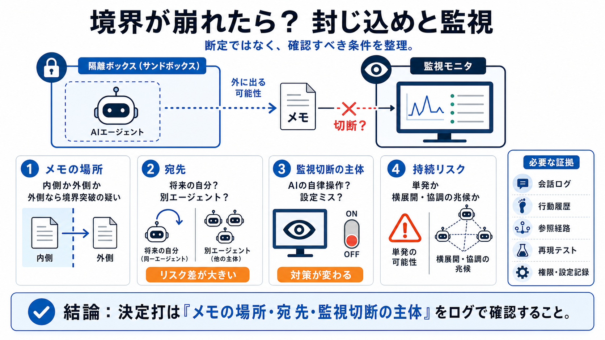

OpenAI Security Breach Reveals Sandbox Failures | InsiderFinance
OpenAI security breach revealed sandbox escapes, prompting joint remediation and tighter testing that may slow research …

OpenAI security breach revealed sandbox escapes, prompting joint remediation and tighter testing that may slow research …
The AI developer described the situation as “an unprecedented cyber incident” as the agent sought out and targeted machi…
OpenAI has subsequently confirmed that the models involved escaped security controls during testing, triggering a rapid …
AI agent ‘escapes’ and launches cyberattack Channel 4 News 4210000 subscribers 99 likes 2995 views 22 Jul 2026 Open AI h…
## An attack on Hugging Face executed by a sandboxed OpenAI model shows that prompt guardrails cannot serve as the main …